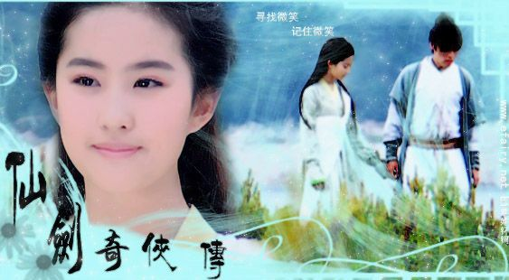

|
|
|
《仙剑奇侠传》是一款被众多玩家公认为“旷世奇作”的经典中文角色扮演游戏，自1995年7月出片以来，即在各种游戏杂志的排行榜中名列前茅；并荣获1995年CEM STAR“最佳角色扮演游戏奖"以及1995年KING TITLE"游戏类金袋奖"的肯定。本作自面世以来就长盛不衰，在中文游戏史上以惊人的生命力屹立十多年不倒。感人的剧情、动情的音乐、还有那优雅的诗词至今仍让老一辈的玩家难以忘怀。《仙剑奇侠传》在当年屡获殊荣，并在之后的十多年间陆续发展出一系列续作、周边产品及小说，并于2004年被改编成同名电视剧。
注:仙剑奇侠传一游戏有多种版本，最初是DOS版(95年),随后win95版(繁)98柔情版(简)(97年),最后新版(01年),内容相差无几。
平凡的客栈小伙计李逍遥因为机缘巧合结识了女娲族后裔赵灵儿。赵灵儿所居之仙灵岛意外遭人袭击，李逍遥遂担任起护送灵儿往苗疆寻母的重任。 在旅程中，李逍遥先后结识了虽刁蛮却练就一身好武艺的南武林盟主之女林月如，以及聪慧机敏的可爱苗女阿奴。赢得赵灵儿、林月如、阿奴三位姑娘芳心的李逍遥始终信守保护赵灵儿并帮助她寻找母亲的承诺，不畏万难、千里迢迢来到苗疆。 在赵灵儿帮助苗人祈雨解旱、惩奸除恶的过程之中，赵灵儿的身世之谜以及她母亲的下落，也终究水落石出。此时，拜月教主的阴谋摆在众人的眼前，李逍遥、赵灵儿等人却不知这与拜月教主一战，将会铸成一段永恒的悲剧……
电视剧《仙剑奇侠传》是根据大宇资讯同名RPG游戏改编的古装奇幻剧，由上海唐人电影制作有限公司、云南电视台、上海影视有限公司等联合出品，于2004年上半年在浙江东阳、永康等地拍摄，2005年1月陆续在两岸三地播出。《仙剑奇侠传》作为国内第一部由电玩游戏改编的电视剧，在当年创下了收视神话，曾捧回11.3%的平均收视率。当年电视剧的热映，客观上也为《仙剑奇侠传》游戏增加了大量的受众群体，成就了电视剧产业和游戏产业的双赢。在剧情方面，编剧对故事进行了改编与创新，部分剧情与游戏有较大出入，观众们对之的评价褒贬不一、毁誉参半。
仙剑1DOS版
http://119.147.41.16/down?cid=29C48F6CD37F8EB9B4221A1D39051595082083BF&t=1&fmt=&usrinput=仙剑DOS&dt=2004000&ps=0_0&rt=0kbs&plt=0
仙剑一98柔情篇
http://119.147.41.16/down?cid=3DF8FA2B68F521F02A3BA630160A33B782C6F9FF&t=1&fmt=&usrinput=仙剑98&dt=2016000&ps=0_0&rt=0kbs&plt=0
新仙剑XP版
http://119.147.41.16/down?cid=9DC75A2B3E72F235AC6A1CA2C9E5FDC98AE29BE5&t=1&fmt=&usrinput=新仙剑xp&dt=2002000&ps=0_0&rt=0kbs&plt=0
原版攻略
http://www.qiyun.org/html/410/114216.htm新版攻略
http://www.qiyun.org/html/407/98535.htm